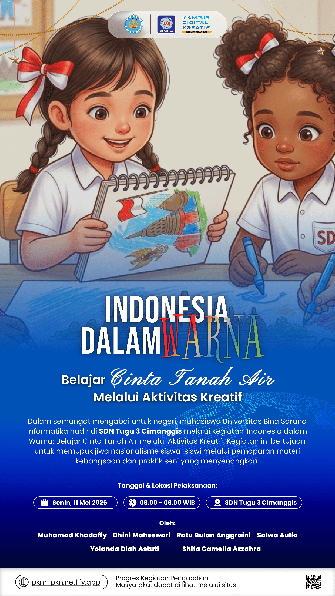

“Belajar Cinta Tanah Air Melalui Aktivitas Kreatif” Akan Diselenggarakan di SDN Tugu 3 Cimanggis
 diunggah oleh Tim Pelaksana PKM
(pada Mei, 2026)
diunggah oleh Tim Pelaksana PKM
(pada Mei, 2026)

Sebagai bentuk implementasi kegiatan pengabdian kepada masyarakat sekaligus upaya menanamkan nilai-nilai nasionalisme sejak usia dini, tim pelaksana yang terdiri dari enam orang mahasiswa, yaitu Muhamad Khadaffy, Dhini Maheswari, Yolanda Diah, Ratu Bulan Anggraini, Shifa Chamelia Azzahra, dan Salwa Aulia, akan menyelenggarakan kegiatan bertajuk “Belajar Cinta Tanah Air Melalui Aktivitas Kreatif” pada 11 Mei 2026 di SDN Tugu 3 Cimanggis. Program ini dirancang dengan pendekatan edukatif dan interaktif yang disesuaikan dengan karakteristik anak-anak usia sekolah dasar. Melalui kegiatan yang menyenangkan, para siswa akan diajak untuk mengenal Indonesia lebih dekat sebagai negara kepulauan yang memiliki kekayaan budaya, bahasa daerah, suku bangsa, adat istiadat, serta keberagaman yang menjadi identitas dan kebanggaan bangsa Indonesia. Dalam sesi pemaparan materi, peserta akan diperkenalkan pada berbagai fakta menarik mengenai Indonesia, mulai dari banyaknya pulau yang tersebar dari Sabang sampai Merauke, keberagaman budaya di berbagai daerah, hingga pentingnya menjaga persatuan dan rasa cinta terhadap tanah air. Materi akan disampaikan dengan bahasa yang sederhana dan komunikatif agar mudah dipahami oleh siswa SD. Tidak hanya berfokus pada penyampaian materi, kegiatan ini juga akan dikemas melalui aktivitas kreatif dan menyenangkan agar peserta dapat belajar secara aktif. Setelah sesi pemaparan, para siswa akan mengikuti kegiatan mewarnai dan menyambungkan simbol-simbol Pancasila. Aktivitas tersebut diharapkan dapat membantu anak-anak mengenal lambang negara sekaligus memahami makna dasar dari setiap sila Pancasila melalui media pembelajaran visual dan praktik langsung.

Melalui kombinasi antara edukasi dan aktivitas kreatif, kegiatan ini diharapkan mampu menciptakan suasana belajar yang menyenangkan serta memberikan pengalaman yang berkesan bagi para peserta. Selain meningkatkan pengetahuan mengenai Indonesia dan Pancasila, program ini juga bertujuan menumbuhkan rasa bangga, cinta tanah air, dan semangat persatuan pada anak-anak sejak dini. Kegiatan pengabdian masyarakat ini diharapkan dapat menjadi langkah kecil namun bermakna dalam mendukung pendidikan karakter bagi generasi muda. Dengan adanya kolaborasi bersama SDN Tugu 3 Cimanggis sebagai mitra pelaksana, diharapkan kegiatan dapat berjalan dengan baik dan memberikan manfaat positif bagi seluruh peserta yang terlibat.